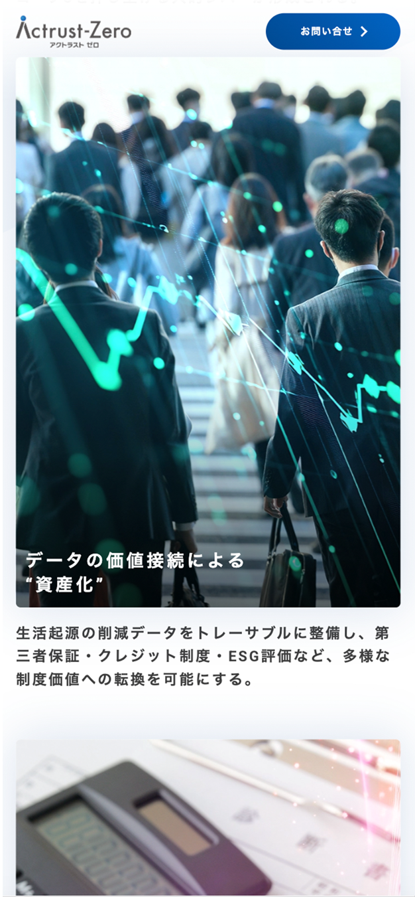
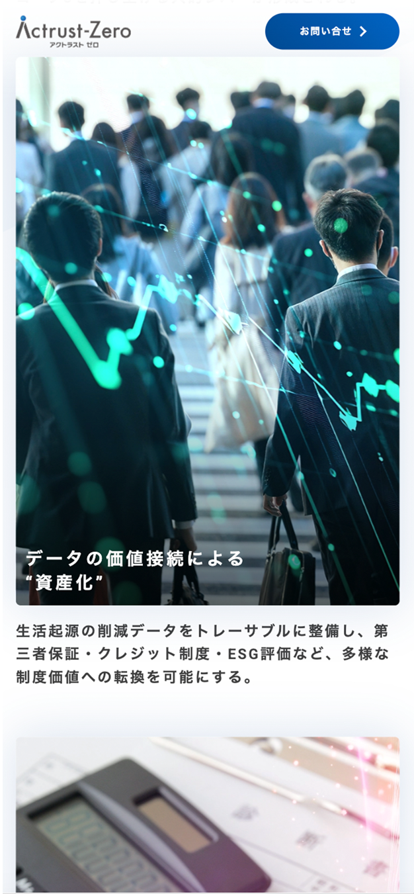

Actrust-Zero Webサイト
制作背景・意図
- 【概要】
-
- 役割 : 人の行動データを起点とした脱炭素プラットフォームという新しい概念を扱うサービスであるため、その価値や仕組みを企業・行政関係者に理解しもらう役割を担うページ
- 対象ユーザー : 企業・行政関係者
- 掲載場所 : Actrust-Zeroサイト
- アプリ（SPOBY）について :
「SPOBY」は人の活動による脱炭素・健康増進を実現するアプリです。ユーザーはアプリを利用して活動を行うことでポイントを獲得でき、貯まったポイントはアプリ内に掲載されている様々なリワードと頑張ったご褒美として交換・獲得することができます。
- 【制作目的】
-
- Actrust-Zeroは、人の行動データを起点とした脱炭素プラットフォームという新しい概念を扱うサービスであるため、その価値や仕組みを企業・行政関係者に正しく理解してもらうことを主な目的として制作しました。また、サービス理解の先に問い合わせへとつながる導線を設けることで、企業・行政との連携を促し、SPOBYサービスの活用・展開につなげることも意識しています。
- 【背景/課題】
-
- Actrust-Zeroは、人の行動データを起点とした脱炭素プラットフォームという、従来にはない新しい概念を扱うサービスであるため、サービスの価値や仕組みが直感的に理解されにくいという課題がありました。特に企業・行政関係者にとっては、「どのような仕組みで、何ができ、どのように自社・自治体の取り組みに活用できるのか」を具体的に理解できなければ、導入や連携の検討につなげることが難しい状況でした。そのため、サービスの背景や社会的意義、仕組みを整理し、企業・行政が意思決定を行うための判断材料を十分に提供する必要がありました。
- 【制作時に重視したポイント】
-
- Actrust-Zeroは、人の行動データを起点とした脱炭素プラットフォームという抽象度の高い概念を扱うサービスであるため、初見でも全体像を把握できるよう、まずはサービスの思想や社会的背景を伝える構成としました。その上で、「人の行動データがどのように脱炭素価値へと変換されるのか」を視覚的に理解できるよう、図解やイラストを用いて仕組みを段階的に説明しています。

 
